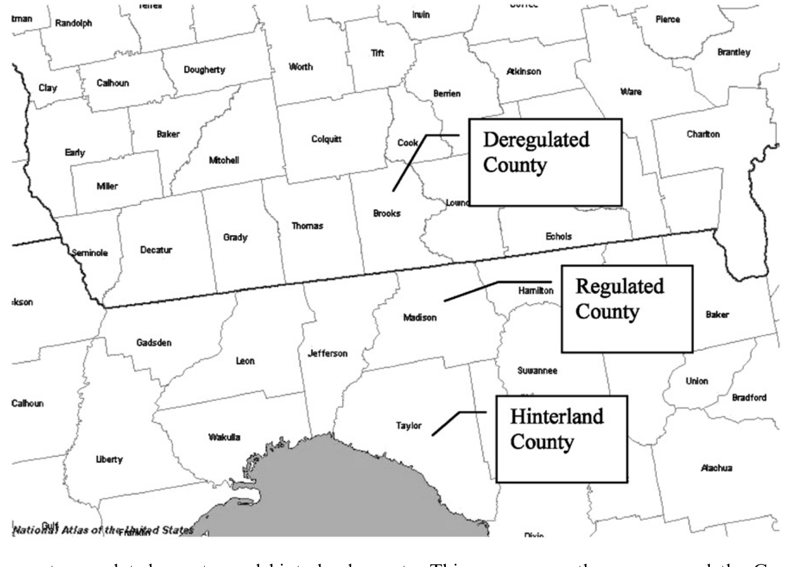
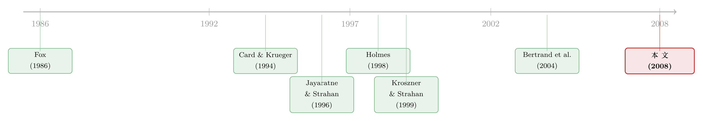

在地图上画一条线：跨州县界如何重估了「银行松绑」的真实效果
本文读的是 Huang (2008, Journal of Financial Economics)：作者沿着美国各州「分支机构管制」解除时间不同步的州界，把紧贴边界、分属两州的县两两配对，做成一个近似「断点回归」的天然实验；再用随机化的「安慰剂松绑」校准临界值。结论很扎心——在 1975–1990 年的 23 次松绑事件里，只有 5 次能在 90% 以上的置信度上看到显著的增长加速，而且没有一次发生在 1985 年之前。曾被广泛接受的「银行松绑→地方经济起飞」，比我们以为的要弱得多。
1 一个被反复引用、却也许站不住的「常识」
金融自由化对地方经济增长是好事——这几乎是金融发展文献里的一条共识（Levine, 2005 做过系统综述）。在美国，这条共识有一个特别干净的「自然实验」来源：从 1970 年代中期开始，各州陆续解除对州内分支机构扩张 (intrastate branching) 的限制，时间先后不一，错落了十几年。州与州之间的银行体系在此之前几乎是 50 个互相隔绝的小王国，于是「谁先松绑、谁后松绑」就成了研究者梦寐以求的差异来源。
最有名的那篇是 Jayaratne and Strahan (1996)。他们用州作为分析单位，发现解除分支机构管制之后，本州经济增长明显加快。这篇文章被引用了无数次，几乎钉死了「银行松绑是好事」这个结论。
但本文作者抛出了一个让人不太舒服的问题：这个结论，到底有多稳？
问题出在「拿谁跟谁比」。各州是一波一波松绑的，同一地区里很少有两个州在差得很远的时间点上各自松绑。为了凑够回归的自由度，以往研究只能把来自完全不同区域的州拉到一起做对照——比如拿德州去比密歇根。可这两个州连商业周期 (business cycle) 都不同步，增长路径八竿子打不着。Freeman (2002) 和 Wall (2004) 在控制了区域效应之后就发现：松绑的「正效应」其实并不稳健，有些区域为正，更多区域居然为负。
更要命的是反向因果：松绑本身可能是被「对未来增长机会的预期」诱发的（这种预期对计量经济学家是不可观测的 (unobservable)）。如果一个州正因为预见到要起飞才去松绑，那么「松绑之后增长加快」就完全可能是一个伪相关——是各区域增长路径的异质性（Garrett, Wagner, and Wheelock, 2004），而非松绑本身造成的。
于是问题就清楚了：我们需要一个对照组，它要在那些看不见的东西上，跟处理组尽可能像。
2 识别策略：把对照组「贴」到边界线上
本文的核心招数，说穿了只有一句话：别拿德州比密歇根，去拿州界两边紧挨着的两个县互相比。
具体做法是这样。先找出一对相邻的州，它们隔着一条州界；要求是——其中一州解除了州内分支机构管制之后，至少三年内另一州仍然受限。作者把这种边界叫做管制变更边界 (regulation change border)。在最终样本里，配对两州松绑时间的平均间隔约为 6 年，作者认为这足够长，长到经济效果该显现就显现。
为什么是「紧贴边界的县」？因为两个毗邻县 (contiguous counties) 不只在可观测特征上接近，更重要的是在不可观测特征——气候、交通、集聚经济、增长机会——上也几乎一样。它们本该沿着同一条增长路径走。一旦州界一侧先松了绑，两侧短期内出现的人均收入增速差，就更可能是松绑这一刀切出来的，而不是别的什么。这正是 Card and Krueger (1994) 在新泽西—宾州边界研究最低工资、Holmes (1998) 在州界两侧比较制造业增长用过的思路;本文把它推得更细：不是粗略地比较边界两侧的两条「地带」，而是一个处理县只跟它自己那个隔界邻居配对。
这套思路与「跨州分支机构松绑」这条线上的另一篇实验异曲同工——关于松绑如何撬动企业创新，可参见《银行能不能「养」出创新？——一场跨州放开的自然实验》。
那么处理效应怎么算？本质上是一个双重差分 (difference-in-differences, DiD)：对每一对配对县，比较松绑前后人均收入增速的变化，再把处理县（先松绑州的县）减去对照县（后松绑州的县）。用最朴素的写法，单对县的处理效应是
$$ \hat{\tau} = \big(g^{T}_{\text{post}} - g^{T}_{\text{pre}}\big) - \big(g^{C}_{\text{post}} - g^{C}_{\text{pre}}\big), $$
其中 \(g\) 是人均收入增速，上标 \(T\)、\(C\) 分别表示处理（已松绑）与对照（仍受限）的邻县。但作者在点估计上还多做了两步校正：在比较时同时调整收入水平差 (income gap) 和增长机会差 (growth opportunity gap)，避免这两者把处理效应的点估计带偏。
3 为什么需要「安慰剂松绑」：把临界值「跑」出来
到这里，一个自然的问题是：就算我算出了一个跨界增速差，我凭什么说它「显著」？
这正是本文方法论上最有意思的一步。它不去信任教科书里那张标准的 t 分布表，而是自己用数据把临界值跑出来。理由有二:
第一，数据窥探 (data-snooping)。在几十段边界、几十个事件里翻找「显著」的结果，本来就容易翻出假阳性。第二，空间相关 (spatial correlation)。一连串相邻的县对之间，处理效应彼此不独立，会把标准误压低、把显著性吹大——这正是 Bertrand, Duflo, and Mullainathan (2004) 警告过的 DiD 标准误陷阱。
作者的解法是随机化 (randomization)：在另外 32 段非事件边界 (non-event borders) 上——那里两侧根本不存在管制差异——人为地、随机地安插一批「虚构的安慰剂松绑事件 (placebo deregulations)」。这些边界上本不该有任何真实的处理效应，于是它们估出来的「效应」分布，就构成了在「无效应」原假设下估计量的经验分布。把真实事件的估计量拿去和这张经验临界值表对照，才敢说哪个事件真的显著。这一招同时把空间相关对标准误的影响也一并吸收了进去。
这种「用安慰剂分布替代解析临界值」的精神，和后来事件研究里对假阳性的反思一脉相承——可参见《事件研究里的「假阳性」：当一根 t 值不再等于因果》。
4 数据：285 对县，38 段边界，23 次松绑
- 样本单位：跨管制变更边界配对的毗邻县。共
285对，分布在38段管制变更边界上。 - 事件：1975–1990 年间的
23次州级分支机构松绑事件，从 Maine（1975）一路排到 Wisconsin（1990）。 - 边界识别：用 National Atlas of the United States 确定毗邻县;松绑年份取自 Amel (1993)。
- 样本筛选：剔除西部各州（蒙大拿、怀俄明、科罗拉多、新墨西哥及其以西）——那里的县又大又不规则、人口稀疏，难以形成整齐的县对，且西部多半很早就松了绑，没多少跨界差异可用。纽约—新泽西边界也被排除（通勤跨界太强）。约三分之一的样本县位于都会区。
光说「配得准」不够，作者用一个反事实实验给出了硬证据（如表 2 所示）。对每个处理县，他比较两种构造对照组的方式：一是本文的毗邻县，二是 Jayaratne and Strahan (1996) 式的「全国所有晚松绑至少三年的县」。结果是——按事件平均，处理组与对照组在人均收入对数上的绝对差，毗邻县做法只有 13.45%，全国做法高达 23.44%；制造业收入占比的绝对差分别是 0.14 与 0.18。几乎在每一个事件里，贴着边界配对都给出了更小的组间差异。换句话说，光在可观测特征上，地理配对就已经把对照组改善了一大截——更别说那些看不见的因素。
5 反转：曾经的「大效应」，缩成了五次
把这套方法跑完，结论来了：在 23 次松绑事件里，只有 5 次能在 90% 以上置信度上观察到显著的增长加速，而且这 5 次没有一次发生在 1985 年之前。
这和「松绑普遍带来显著增长」的旧结论相去甚远。曾经被认为是金融自由化经典案例的故事，在更干净的对照组下，大半消失了。
作者还堵上了最后一个漏洞:跨界溢出 (cross-border spillover)。万一松绑的好处会渗透到州界对面那个「对照县」，那对照县就被「污染」了，估计量会被低估。为此他引入第二个对照组——腹地县 (hinterland counties):它们和受管制的边界县同属一侧、同样长期受限，但离边界更远，是「夹着边界受管制县」的更外圈邻居（全样本 249 个）。如果溢出真的存在，边界对照县会比腹地县表现更好;数据不支持这一点，于是溢出导致设计失效的可能性被排除。Fig. 2 用佐治亚—佛罗里达边界给了一个直观的例子:佐治亚 1983 年松绑、佛罗里达 1988 年才松,Brooks 县（佐治亚）是解除管制县,Madison 县（佛罗里达）是受管制县,再往里的 Taylor 县（佛罗里达）就是腹地县。

Figure 2: Deregulated county, regulated county, and hinterland county. This map covers the area around the Georgia-Florida border
6 那么，为什么松绑没那么神？
既然真实效应这么弱，作者给了几个让人信服的解释，核心其实是一句话:银行管制这道枷锁，可能本来就没那么「绑」。
其一，美国经济本就不那么依赖银行。 银行贷款未必「特殊」或「不可替代」（Marquis, 2001）。Berger, Kashyap, and Scalise (1995) 指出，1980 年只有约 20% 的非农非金融企业债务由商业银行提供，而且这一比例在整个 1980 年代还在下降;不受地理限制的财务公司 (finance companies) 就提供了近 10%。再加上资本市场、二次抵押、信用卡、房屋净值信贷——这些都不受分支机构管制约束。实证上，Driscoll (2004) 发现银行贷款对产出影响很小、常常为负且不显著;Ashcraft (2006) 估计实际州收入对银行贷款供给的弹性接近零、绝不超过 10%。既然银行信贷的边际作用本就微弱，松不松绑自然也掀不起大浪。
其二，管制的成本在被解除时往往已降到最低。 Kane (1996) 与 Kroszner and Strahan (1999) 点出过这个反讽:一项管制真正被废除时，它要约束的东西多半早已被市场用法律漏洞、合约创新、监管套利侵蚀殆尽。正如 Kane (1981, p. 359) 那句名言——「在 1970 年代,挖漏洞和造漏洞成了现代存款机构的主营业务。」管制在纸面上被划掉的那一刻，它在现实中其实早就名存实亡了。
7 文献脉络
这条研究的真正母题，并不是「银行」，而是「如何用一条行政边界做因果识别」。
最早把州界当作识别工具的，是公共财政里的 Fox (1986)——他发现相邻州的销售税差异会影响边界县的零售额。真正让这套方法广为人知的是劳动经济学的 Card and Krueger (1994):用新泽西—宾州边界的快餐业，干净地估计了最低工资上调的就业效应。随后 Holmes (1998) 把它用到州政策与制造业选址、Black (1999) 用学区边界给学校质量定价。
在银行这条线上，主线则是 Jayaratne and Strahan (1996) 奠定的「金融—增长之结 (finance-growth nexus)」:分支机构松绑带来更快增长。Kroszner and Strahan (1999) 进一步追问「是谁推动了松绑」——大银行与小型、依赖银行的企业是赢家，小银行与保险公司是输家，利益集团的相对力量决定了松绑时机;这恰恰提醒我们松绑可能是内生的。方法论上，Bertrand, Duflo, and Mullainathan (2004) 同期敲响了 DiD 标准误被严重低估的警钟。
本文 (Huang, 2008) 正好站在这两条线的交汇处:它把边界识别法做到「一县对一县」的精度，又用随机化安慰剂事件解决了数据窥探与空间相关，最终对 Jayaratne and Strahan (1996) 的乐观结论给出了一个克制得多的修正。

评论与延伸（Q&A + 研究方向）
(a) 几个可能的疑问
Q：这到底算「断点回归」还是「双重差分」？
两者的精神都在里面。摘要里作者自己称之为天然的「regression discontinuity」设置——州界是那个断点,贴着断点两侧的县在协变量上连续、却在「是否已松绑」这个待遇上不连续。但具体估计量是 DiD:比较松绑前后、两侧县增速变化之差。可以理解为「用空间断点来挑选可信的 DiD 对照组」。
Q：把对照县换成「全国晚松绑的县」，结论会不会就翻回去？
这正是本文的要害。表 2 显示,全国式对照组与处理组的可观测差异（人均收入对数差
23.44%）几乎是毗邻县做法（13.45%）的两倍。对照组越不像处理组,越容易把区域增长路径的异质性误读成「松绑效应」。本文的弱结论,某种程度上就是「换了个更干净的对照组」直接换出来的。
Q：松绑是内生的（被增长预期诱发的），毗邻县设计能解决吗？
能缓解关键的那一半。松绑由州议会决定,要照顾全州选民,边界上几个县的经济状况很难左右立法（不像 Kroszner-Strahan 强调的全州利益集团）。更重要的是,即便松绑被某种全州性预期驱动,这种预期大概率被边界两侧的县【共享】——配对一减,共同的预期成分就被差掉了。剩下的威胁是「只影响一侧县、又恰与松绑同时发生」的局部冲击,这类就难处理。
Q：「只有 5 次显著」是不是统计功效太低、把真效应也埋了？
这是个诚实的担忧。毗邻县虽然配得准,但样本被切得很碎,加上空间相关的修正会推高临界值,确实可能让中等大小的真实效应通不过检验。所以严格说,本文证明的是「在这套高标准识别下,普遍而显著的增长加速并不存在」,而非「松绑绝对无效」。两者不是一回事。
Q：为什么显著的 5 次全都在 1985 年之后？
文章没有给死板的答案,但和它的第二个解释相容:早期松绑的州,管制成本可能早被漏洞侵蚀殆尽（Kane 的「挖漏洞」),松绑只是给既成事实盖章;而较晚松绑的州或许约束还更实,松绑的边际作用反而更可见。这条时间规律本身就值得单独做一篇。
Q：腹地县这个第二对照组,真的必要吗？
必要,因为它堵的是「溢出污染对照组」这个会动摇整个设计根基的漏洞。若松绑的好处渗到州界对面,边界对照县就不再「纯净」,处理效应会被系统性低估。腹地县离边界更远、受溢出更小,拿它当参照能检验这种污染是否存在——结果是不支持,设计得以保住。
(b) 几个可能的研究问题与提案
1. 把这套方法搬到公司债/信用利差上
【经济故事】松绑改变的是银行竞争与信贷供给。如果银行信贷真的可替代（本文的核心论点之一）,那么松绑州的本地企业,其【公开债 vs 银行贷款】的融资结构、以及债券二级市场流动性,应当几乎不变。这能从价格侧再检验一次「银行不特殊」的命题。 【可行性】中。需要把发行人总部所在县映射到松绑事件（Amel 数据 + Mergent FISD / TRACE）。难点是早期（1980s）公司债微观数据稀薄,样本偏向大企业,而大企业本就不依赖银行,识别力会打折。
2. 外资银行准入的「边界实验」
【经济故事】本文做的是州内分支机构松绑;州际银行准入直到 1994 年才放开。可以把「外来银行（out-of-state / foreign banks）进入」当作处理,沿州界看本地信贷可得性与小企业增长——这与外资持有人是否真能改善本地金融的争论直接相关。 【可行性】中。州际准入时间表同样错落、可用 Amel/Kroszner-Strahan 的法律年表;县级就业与企业动态可用 County Business Patterns。挑战是州际准入与州内松绑时间高度重叠,要小心两种处理互相缠绕。
3. 重做「显著的 5 次」:它们到底特殊在哪？
【经济故事】既然显著效应集中在 1985 年后,自然要问:是这几个州本身银行依赖度更高、漏洞被堵得更死,还是松绑时正赶上信贷扩张周期？把「事件层面的异质处理效应」和州的事前金融结构对接,可能比一个平均效应更有信息量。 【可行性】高。这完全在本文样本之内,只需把 23 个事件的估计量与各州事前的银行集中度、贷存比、企业规模分布做横截面回归。诚实地说,样本只有 23 个事件,统计上会很吃力,更适合做案例式的描述性分析。
4. 用现代交错 DiD 工具复核
【经济故事】本文是 2008 年的作品,用的是随机化临界值。十多年后,交错处理时点下的 DiD 已被证明会因「已处理单位充当对照」而把符号都弄反。用 Callaway-Sant'Anna 类估计量重跑这 23 个错时事件,既是方法论练习,也能检验旧结论的稳健性。 【可行性】高。数据结构现成（县 × 年面板 + 错时处理）。方法上可直接套用现成包。可参见《当「更稳健」的设计悄悄把符号弄反了——重读交错双重差分》。
我的判断
这是一篇被低估的「方法论 + 证伪」论文。它最大的贡献不在于又跑了一遍银行松绑,而在于示范了如何把「行政边界」用到极致:一县对一县的精确配对,把不可观测的增长机会差掉;再用随机化的安慰剂事件,绕开了数据窥探和空间相关这两个最容易被忽视的坑。这套「自己跑临界值」的思路,放到今天的因果推断工具箱里依然不过时。
对识别,我最大的保留是统计功效。把样本切到县对、又抬高临界值之后,中等真实效应很可能被一并埋掉;因此「只有 5 次显著」更应被读作「普遍而强的效应不存在」,而非「松绑无效」的铁证——作者本人也相当克制,这一点值得敬重。另一个隐忧是外部效度:剔除西部、剔除纽约—新泽西之后,样本主要是东部中小县,结论能否外推到大都会金融中心,并不清楚。
后续我最想看到的,是把同一把尺子对准价格而非数量:如果银行信贷真的可替代,那么松绑州企业的债券利差、银行贷款利率、乃至融资结构理应纹丝不动。那将是对「银行不特殊」这一论断更直接、也更难反驳的一次检验。
参考文献
- Amel, D. (1993). State laws affecting the geographic expansion of commercial banks. Working paper, Board of Governors of the Federal Reserve System.
- Ashcraft, A. B. (2006). New evidence on the lending channel. Journal of Money, Credit, and Banking 38, 751–775.
- Berger, A. N., Kashyap, A. K., Scalise, J. M. (1995). The transformation of the US banking industry: what a long, strange trip it's been. Brookings Papers on Economic Activity 2, 55–218.
- Bertrand, M., Duflo, E., Mullainathan, S. (2004). How much should we trust differences-in-differences estimates? Quarterly Journal of Economics 119, 249–275.
- Black, S. E. (1999). Do better schools matter? Parental valuation of elementary education. Quarterly Journal of Economics 114, 577–599.
- Card, D., Krueger, A. B. (1994). Minimum wages and employment: a case study of the fast-food industry in New Jersey and Pennsylvania. American Economic Review 84, 772–793.
- Driscoll, J. C. (2004). Does bank lending affect output? Evidence from the US states. Journal of Monetary Economics 51, 451–471.
- Fox, W. F. (1986). Tax structure and the location of economic activity along state borders. National Tax Journal 39, 387–401.
- Freeman, D. G. (2002). Did state branching deregulation produce large growth effects? Economics Letters 75, 383–389.
- Holmes, T. J. (1998). The effect of state policies on the location of manufacturing: evidence from state borders. Journal of Political Economy 106, 667–705.
- Huang, R. R. (2008). Evaluating the real effect of bank branching deregulation: comparing contiguous counties across US state borders. Journal of Financial Economics 87(3), 678–705.
- Jayaratne, J., Strahan, P. E. (1996). The finance-growth nexus: evidence from bank branch deregulation. Quarterly Journal of Economics 111, 639–670.
- Kane, E. J. (1981). Accelerating inflation, technological innovation, and the decreasing effectiveness of banking regulation. Journal of Finance 36, 355–367.
- Kane, E. J. (1996). De jure interstate banking: why only now? Journal of Money, Credit and Banking 28, 141–161.
- Kroszner, R. S., Strahan, P. E. (1999). What drives deregulation? Economics and politics of the relaxation of bank branching restrictions. Quarterly Journal of Economics 114, 1437–1467.
- Levine, R. (2005). Finance and growth: theory and evidence. In Handbook of Economic Growth, North Holland, 865–934.
- Marquis, M. (2001). What's different about banks—still? FRBSF Economic Letters 2001-09.
- Wall, H. J. (2004). Entrepreneurship and the deregulation of banking. Economics Letters 82, 333–339.